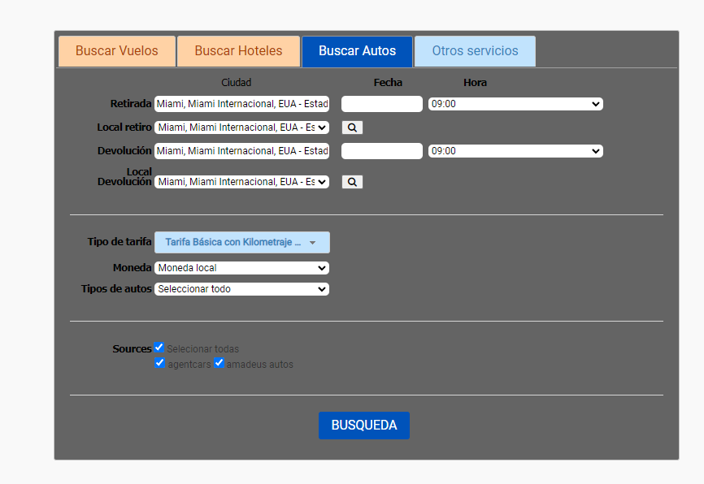
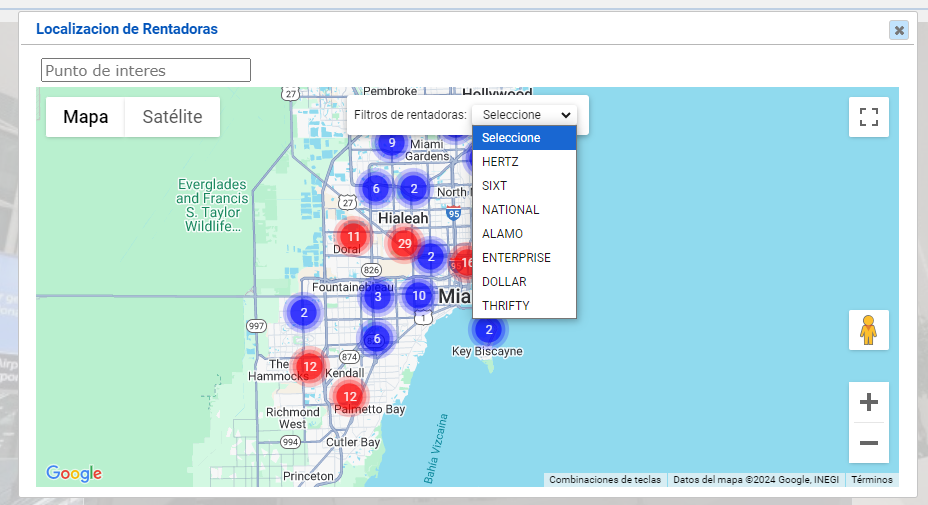
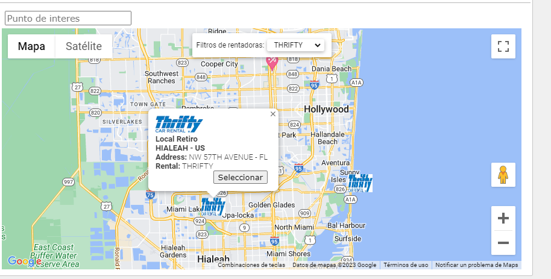
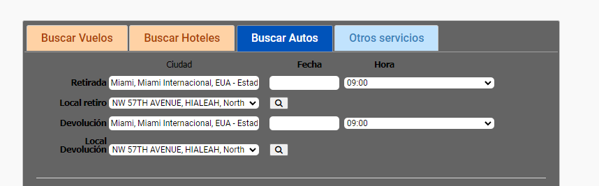

Documentación del parámetro
Nombre de parámetro: USECARSMAPS
Este parámetro es para utilizar la funcionalidad de mapas en el buscador de autos
Al configurar “Si” en el buscador de autos al digitar la retirada y devolución, se habilitara unos iconos de búsqueda de mapas, ver imagen a continuación

Al dar clic en la lupa se despliega un mapa donde se pueden observar las diferentes rentadoras disponibles en la localidad correspondiente

Punto de interés: Este es un buscador y autocompletar que permite cambiar la ubicación del centro del mapa, Se utiliza para visualizar ubicaciones que tengan cerca rentadoras. Por ejemplo, buscamos una rentadora que este cerca del aeropuerto de Miami.
Filtros de rentadoras: Puedes seleccionar y filtrar la rentadoras que quieras y visualizarlas en la ubicación de la búsqueda principal.
Seleccionar una ubicación de rentadoras: Puedes dar clic en una rentadora en cualquier ubicación y visualizar la información.

Si quieres seleccionar esta ubicación, damos clic en el botón de “Seleccionar”, después el modal se cerrará y la rentadora quedará registrada como selección.

Al configurar “No” o no definir nada en el parámetro, dicha opción de búsqueda de mapa no saldrá.
Tener en cuenta que este parámetro va ligado al parámetro GOOGLECARSMAPSKEY, es decir que también debe de estar configurado para que salga el mapa.